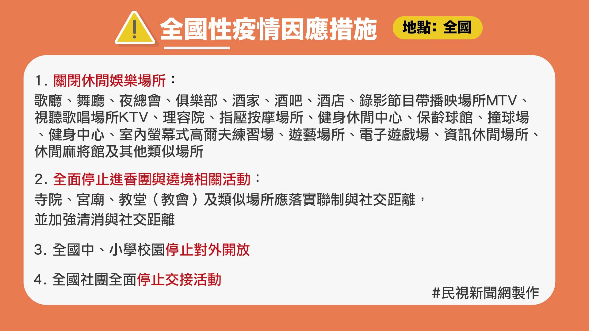
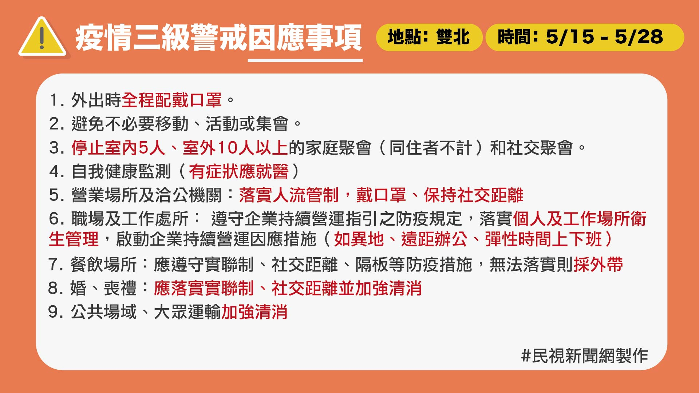
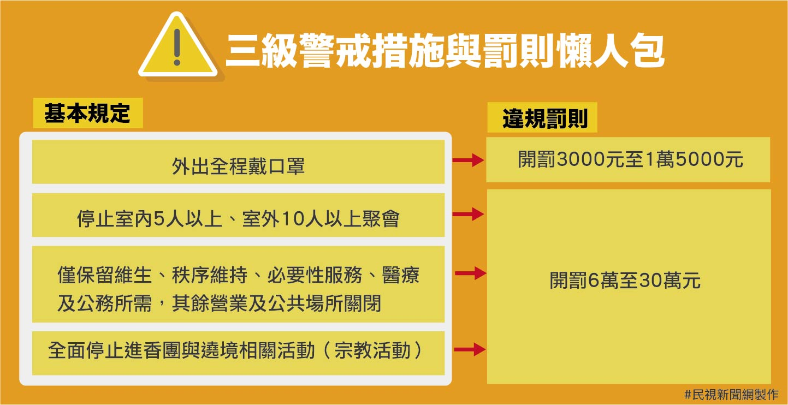
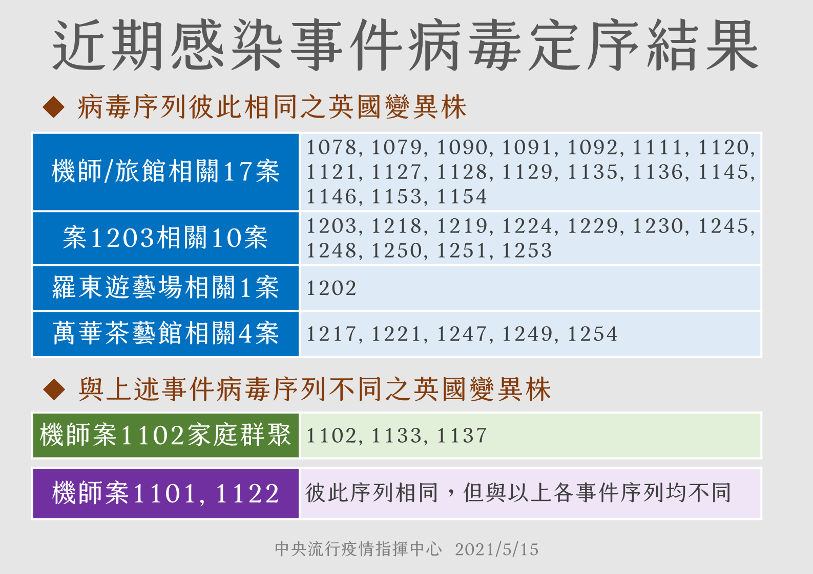

武漢肺炎疫情
圖表資訊一次看懂
台灣累計確診總數
今日新增
本土案例
境外移入
全球確診
死亡
台灣累計確診總數
今日新增
本土案例
境外移入

因應國內疫情持續嚴峻，雙北地區陸續發生感染來源不明的病例及群聚事件，指揮中宣布自即日起至5月28日，啟動全國防疫因應措施。
另外，教育部也於5月18日宣布，自5月19日起至28日，全國各級學校及公私立幼兒園停止到校上課，且兒童課後照顧服務中心、補習班等各類教育機構也同時配合停課，請所有學生停止前往，在家學習。
除了全國必須關閉場所外，由於雙北（台北市、新北市）提升為第三級警戒區域，另公布九大防疫措施、額外關閉場所。
 因應嚴峻疫情，雙北市宣布5月18日至5月28日，高中職以下各級學校、安親班、課輔班全面停課，家長可請「防疫照顧假」。民視新聞對此整理相關Q&A，供有需要的民眾參考。
Q：孩子學校因為疫情停課，可以向雇主請什麼假？
A：12歲以下學童之家長其中一人，於停課期間如有照顧學童之需求，得請「防疫照顧假」。另外，如有就讀高級中等學校（含高中、高職、五專一、二、三年級）或國民中學持有身心障礙證明之子女，有照顧需求，家長其中一人也得請防疫照顧假。
Q：哪些家長可以請「防疫照顧假」？
A：包括：父母、養父母、監護人或其他日常實際照顧兒童之人，如爺爺、奶奶等。
Q：如果雇主不給防疫照顧假，如何處理？
A：依據規定，若家長符合上述需求，雇主應予准假，且不得視為曠工、強迫勞工以事假或其他假別處理，亦不得扣發全勤獎金、解僱或予不利之處分。
若雇主扣發全勤獎金，將依違反勞基法第22條「工資未全額給付」處罰；如強制勞工一定要請特休、事假，將依違反勞基法第38條或第43條規定處罰，處罰金額都是2萬元至100萬元。
Q：若家中孩子不符合「防疫照顧假」適用對象，家長還可以請什麼假？
A：家長得請「家庭照顧假」、「特休」或「事假」以為運用，雇主應予准假。
其中「家庭照顧假」是依據《性別工作平等法》而規定，受僱者於家庭成員預防接種、發生嚴重之疾病或其他重大事故須親自照顧時，得請家庭照顧假。該假日數併入事假計算，全年以7日為限，請假期間可不給工資，但不得視為缺勤而影響其全勤獎金、考績。
根據指揮中心公布近日案例病毒定序結果，其中華航諾福特案、蘆洲獅子會案1203、羅東遊藝場、萬華茶藝館均為相同的英國變異株，因此能夠認定上述案例為一樣的病毒株在互相傳播。



由於雙北確診者激增，恐怕出現醫療量能不足情況，目前除了北部各大醫院進行降載計畫，指揮中心也列出「輕症確診者注意事項」，呼籲確診個案在接獲通知前，在家等候公衛人員通知，將醫療資源留給重症患者。


2019年12月底在中國爆發武漢肺炎後，泰國於2020年1月13日也出現確診首例，為一名來自武漢的61歲女遊客，這也是第一起中國境外的感染案例。
情隨後在亞洲地區擴散，日本因「鑽石公主號」郵輪隔離不當，造成大量旅客染疫及死亡，又因為境內不斷爆發群聚感染，迫使首相發布「緊急事態宣言」，東京奧運甚至被迫延期至2021年；南韓「新天地大邱教會」則出現一位超級傳播者，導致大規模群聚感染。
此外，伊朗、土耳其等地疫情也相當嚴重。其中，印度近來舉行地方選舉、慶祝重要節慶「大壺節」，加上變種病毒肆虐的情況下，單日確診和死亡人數屢破新高，目前累計確診數已突破2000萬，死亡人數也超過20萬大關。
歐洲部分，自義大利疫情大爆發後，鄰近國家也陸續出現確診案例，截至2021年4月，法國已經突破500萬確診，俄羅斯、英國、義大利也有超過400萬人染疫。
美洲方面，美國2020年2月29日宣布首宗死亡個案後，各洲陸續出現案例，隨後更成為這場全球大流行疾病的「震央」，至今確診人數逼近3000萬。而南美第一大國巴西，在總統波索納諾堅持走「超佛系抗疫」路線，還堅稱武漢肺炎僅是「小流感」的情況下，目前確診數逼季1500萬，也是拉美第一大重災區。
資料來源：Our World in Data